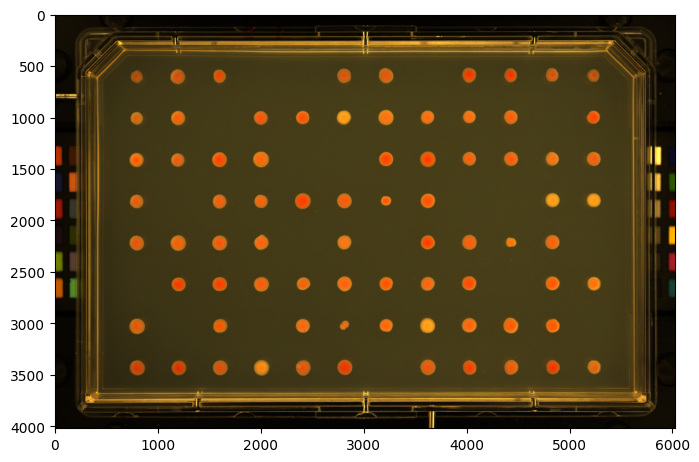
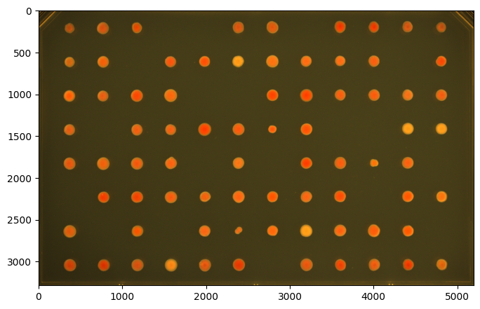
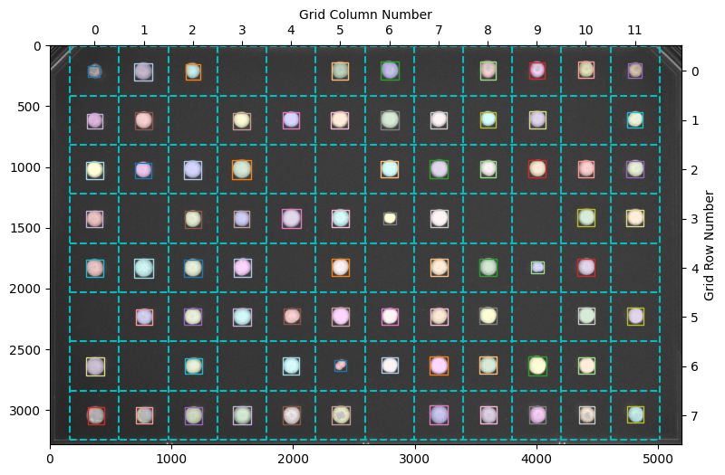
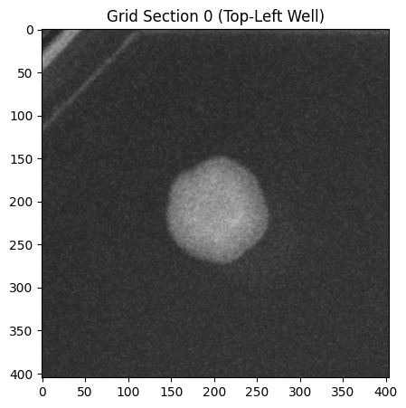
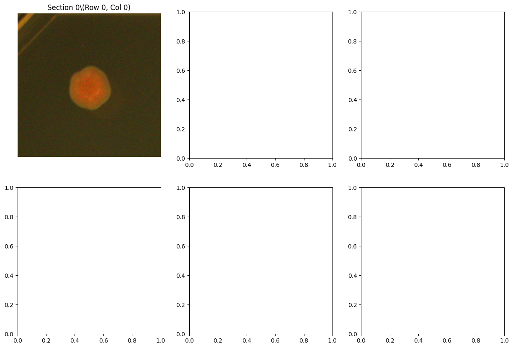
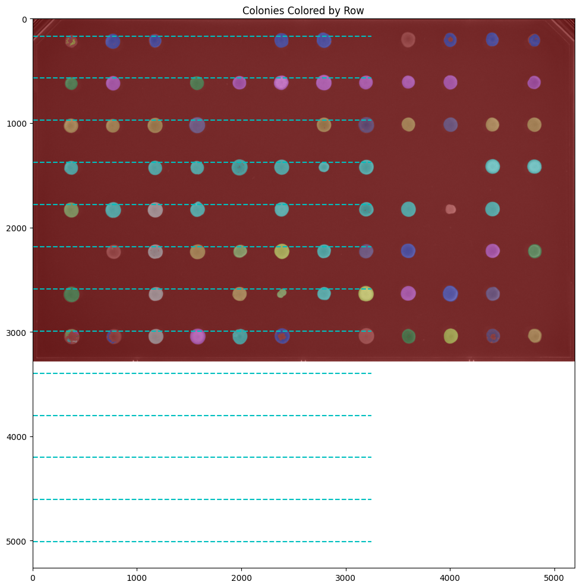
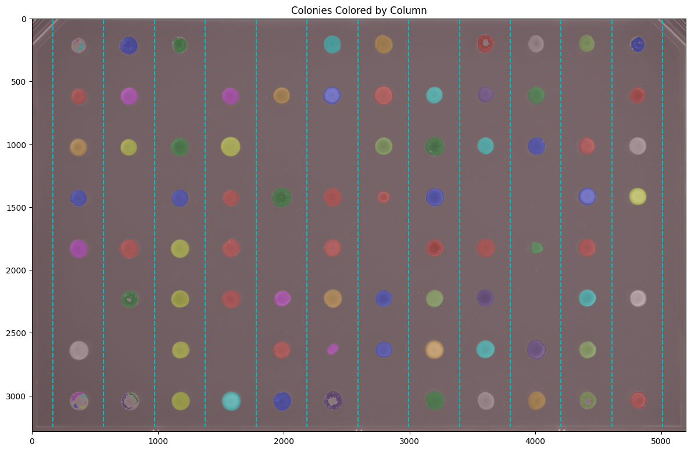
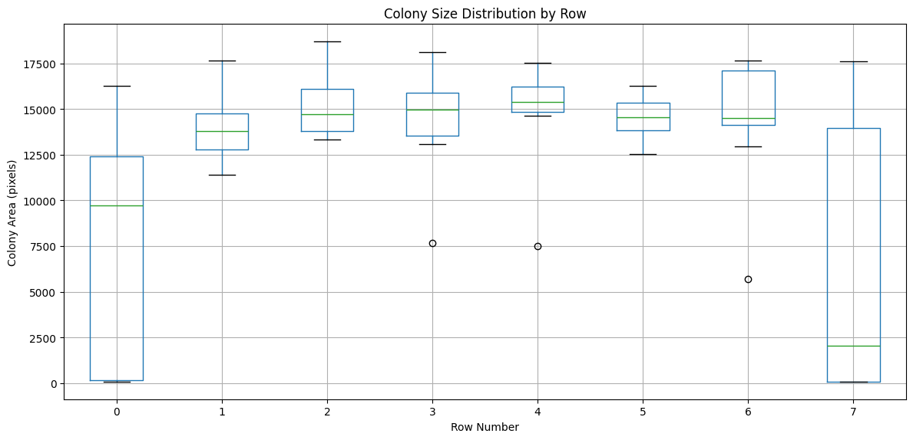

Working with GridImage: Grid-Specific Features#
This tutorial focuses on GridImage - a specialized class for analyzing arrayed microbe colonies on solid media agar plates.
Prerequisites#
Before starting this tutorial, please complete the {doc} Image to understand the core Image class features (rgb, gray, enh_gray, objmap, objects, etc.).
What Makes GridImage Special?#
GridImage extends Image with grid-specific functionality:
Automatic grid alignment to detected colonies
Grid position tracking (row, column, section)
Grid-based visualization
Position information in measurements
When to Use GridImage#
✅ Use GridImage for: 96-well plates, 384-well plates, any arrayed format ❌ Use regular Image for: Single colonies, random arrangements
Let’s explore the grid-specific features!
Setup: Import Libraries#
First, let’s import the phenotypic library (commonly abbreviated as pht).
import phenotypic as pht
import numpy as np
import matplotlib.pyplot as plt
Part 2: Grid-Specific Components#
Now let’s explore the components that are unique to GridImage:
Grid Components#
grid_finder: The algorithm that determines where grid lines should be placedDefault:
AutoGridFinder- automatically aligns to detected coloniesAlternative:
ManualGridFinder- for manual grid specification
grid: An accessor object that provides grid-specific operationsAccess grid information
Get individual grid sections
Visualize rows and columns
nrowsandncols: Grid dimensions (can be adjusted)show_overlay(): Enhanced visualization with gridlines and labels
image = pht.data.load_imager_plate(mode="GridImage")
image.show()
(<Figure size 800x600 with 1 Axes>, <Axes: >)

image = image[390:3675, 425:5620] # Cropping a GridImage returns a regular Image
print(f"Cropped type: {type(image)}")
image = pht.GridImage(image)
print(f"Converted back: {type(image)}")
image.show()
Cropped type: <class 'phenotypic.core._image.Image'>
Converted back: <class 'phenotypic.core._grid_image.GridImage'>
(<Figure size 800x600 with 1 Axes>, <Axes: >)

# Examine grid properties
print(f"Grid finder type: {type(image.grid_finder).__name__}")
print(f"Number of rows: {image.nrows}")
print(f"Number of columns: {image.ncols}")
print(f"Total sections: {image.nrows*image.ncols}")
Grid finder type: AutoGridFinder
Number of rows: 8
Number of columns: 12
Total sections: 96
pht.detect.WatershedDetector().apply(image, inplace=True)
# The S&P imager uses plates that have a corner cutthing through the image, so we remove it with BorderObjectRemover
pht.refine.BorderObjectRemover(100).apply(image, inplace=True)
image.show_overlay()
(<Figure size 900x1000 with 1 Axes>, <Axes: >)

Notice how:
Cyan dashed lines show the grid boundaries
Column numbers appear at the top (0-11)
Row numbers appear on the right (0-7)
Colored boxes show which colonies belong to which grid section
Part 4: Accessing Grid Information#
After detection, the grid is automatically aligned to the colonies. We can access detailed grid assignment information using grid.info().
# Get grid information for all colonies
grid_info = image.grid.info(include_metadata=True)
# Display first 10 colonies
print("Grid Information for Detected Colonies:")
print()
grid_info.head(10)
Grid Information for Detected Colonies:
| Metadata_BitDepth | Metadata_ImageType | Metadata_ImageName | ObjectLabel | Bbox_CenterRR | Bbox_CenterCC | Bbox_MinRR | Bbox_MinCC | Bbox_MaxRR | Bbox_MaxCC | Grid_RowNum | Grid_ColNum | Grid_SectionNum | |
|---|---|---|---|---|---|---|---|---|---|---|---|---|---|
| 0 | 16 | GridImage | b598f0a3-3ae4-451f-82fd-e4ee39723da0 | 13 | 204.124940 | 3599.078722 | 133 | 3535 | 278 | 3667 | 0 | 8 | 8 |
| 1 | 16 | GridImage | b598f0a3-3ae4-451f-82fd-e4ee39723da0 | 14 | 208.329764 | 2791.344287 | 134 | 2722 | 284 | 2865 | 0 | 6 | 6 |
| 2 | 16 | GridImage | b598f0a3-3ae4-451f-82fd-e4ee39723da0 | 15 | 201.530980 | 4404.363277 | 135 | 4345 | 267 | 4467 | 0 | 10 | 10 |
| 3 | 16 | GridImage | b598f0a3-3ae4-451f-82fd-e4ee39723da0 | 17 | 206.936365 | 4002.497164 | 138 | 3941 | 274 | 4064 | 0 | 9 | 9 |
| 4 | 16 | GridImage | b598f0a3-3ae4-451f-82fd-e4ee39723da0 | 18 | 210.003521 | 2384.580162 | 141 | 2318 | 281 | 2452 | 0 | 5 | 5 |
| 5 | 16 | GridImage | b598f0a3-3ae4-451f-82fd-e4ee39723da0 | 19 | 219.281534 | 768.005695 | 147 | 697 | 291 | 839 | 0 | 1 | 1 |
| 6 | 16 | GridImage | b598f0a3-3ae4-451f-82fd-e4ee39723da0 | 20 | 210.920644 | 4810.025350 | 150 | 4754 | 268 | 4864 | 0 | 11 | 11 |
| 7 | 16 | GridImage | b598f0a3-3ae4-451f-82fd-e4ee39723da0 | 21 | 214.893599 | 1173.636205 | 152 | 1117 | 279 | 1235 | 0 | 2 | 2 |
| 8 | 16 | GridImage | b598f0a3-3ae4-451f-82fd-e4ee39723da0 | 23 | 179.447115 | 361.264423 | 169 | 355 | 194 | 373 | 0 | 0 | 0 |
| 9 | 16 | GridImage | b598f0a3-3ae4-451f-82fd-e4ee39723da0 | 24 | 196.233577 | 340.080292 | 189 | 331 | 204 | 349 | 0 | 0 | 0 |
Understanding Grid Columns#
The grid information includes several important columns:
Position Information:#
RowNum: Which row the colony is in (0 to nrows-1)ColNum: Which column the colony is in (0 to ncols-1)SectionNum: Unique section ID (numbered left-to-right, top-to-bottom)
Bounding Box Coordinates:#
MinRowCoord,MaxRowCoord: Minimum and maximum row coordinatesMinColCoord,MaxColCoord: Minimum and maximum column coordinatesCenterRowCoord,CenterColCoord: Center coordinates of the colony
Metadata:#
Metadata_ImageName: Name of the imageMetadata_ImageType: Type designation (GridImage)
# Example: Find all colonies in row 3
row_3_colonies = grid_info[grid_info['Grid_RowNum'] == 3]
print(f"Colonies in row 3: {len(row_3_colonies)}")
print()
row_3_colonies[['Grid_RowNum', 'Grid_ColNum', 'Grid_SectionNum']]
Colonies in row 3: 9
| Grid_RowNum | Grid_ColNum | Grid_SectionNum | |
|---|---|---|---|
| 34 | 3 | 10 | 46 |
| 35 | 3 | 4 | 40 |
| 36 | 3 | 11 | 47 |
| 37 | 3 | 5 | 41 |
| 38 | 3 | 7 | 43 |
| 39 | 3 | 2 | 38 |
| 40 | 3 | 0 | 36 |
| 41 | 3 | 3 | 39 |
| 42 | 3 | 6 | 42 |
# Example: Find colonies in a specific section (e.g., section 25)
section_25 = grid_info[grid_info['Grid_SectionNum'] == 25]
if len(section_25) > 0:
print(
f"Section 25 corresponds to row {section_25['Grid_RowNum'].iloc[0]}, column {section_25['Grid_ColNum'].iloc[0]}")
print(f"Number of colonies detected: {len(section_25)}")
else:
print("No colonies detected in section 25")
Section 25 corresponds to row 2, column 1
Number of colonies detected: 1
Part 5: Working with Grid Sections#
You can extract individual grid sections (wells) from the plate. Sections are numbered from 0 to (nrows × ncols - 1), going left-to-right, top-to-bottom.
# Access the first grid section (top-left)
section_0 = image.grid[0]
print(f"Section 0 shape: {section_0.shape}")
print(f"Number of objects in section 0: {section_0.num_objects}")
Section 0 shape: (405, 404, 3)
Number of objects in section 0: 0
# Visualize a single section
fig, ax = section_0.show_overlay()
plt.title("Grid Section 0 (Top-Left Well)")
plt.show()

# Compare multiple sections
fig, axes = plt.subplots(2, 3, figsize=(15, 10))
axes = axes.ravel()
sections_to_show = [0, 1, 2, 12, 13, 14] # First two rows, first 3 columns
for idx, section_num in enumerate(sections_to_show):
section = image.grid[section_num]
row = section_num//image.ncols
col = section_num%image.ncols
section.show(ax=axes[idx])
axes[idx].set_title(f"Section {section_num}\(Row {row}, Col {col})")
axes[idx].axis('off')
plt.tight_layout()
plt.show()
---------------------------------------------------------------------------
KeyboardInterrupt Traceback (most recent call last)
Cell In[11], line 8
5 sections_to_show = [0, 1, 2, 12, 13, 14] # First two rows, first 3 columns
7 for idx, section_num in enumerate(sections_to_show):
----> 8 section = image.grid[section_num]
9 row = section_num//image.ncols
10 col = section_num%image.ncols
File ~/work/PhenoTypic/PhenoTypic/src/phenotypic/core/_image_parts/accessors/_grid_accessor.py:99, in GridAccessor.__getitem__(self, idx)
97 # Remove objects that don't belong in that grid section from the subimage
98 objmap = section_image.objmap[:]
---> 99 objmap[~np.isin(objmap, self._get_section_labels(idx))] = 0
100 section_image.objmap = objmap
101 section_image.metadata[METADATA.IMAGE_TYPE] = IMAGE_TYPES.GRID_SECTION.value
File ~/work/PhenoTypic/PhenoTypic/src/phenotypic/core/_image_parts/accessors/_grid_accessor.py:341, in GridAccessor._get_section_labels(self, idx)
339 def _get_section_labels(self, idx) -> list[int]:
340 """Returns a list of labels for a grid section based on its flattened index"""
--> 341 grid_info = self.info()
342 section_info = grid_info.loc[grid_info.loc[:, str(GRID.SECTION_NUM)] == idx, :]
343 return section_info.index.to_list()
File ~/work/PhenoTypic/PhenoTypic/src/phenotypic/core/_image_parts/accessors/_grid_accessor.py:63, in GridAccessor.info(self, include_metadata)
55 def info(self, include_metadata=True) -> pd.DataFrame:
56 """
57 Returns a DataFrame containing basic bounding box measurement data plus any object's grid membership.
58
(...)
61 parent's image grid settings.
62 """
---> 63 info = self._root_image.grid_finder.measure(self._root_image)
64 if include_metadata:
65 return self._root_image.metadata.insert_metadata(info)
File ~/work/PhenoTypic/PhenoTypic/src/phenotypic/tools/funcs_.py:234, in validate_measure_integrity.<locals>.decorator.<locals>.wrapper(*args, **kwargs)
229 pre_hashes = {tgt: murmur3_array_signature(_get_array(bound, tgt))
230 for tgt in eff_targets
231 }
233 # execute the original method
--> 234 result = func(*args, **kwargs)
236 # re-hash and compare
237 if VALIDATE_OPS:
File ~/work/PhenoTypic/PhenoTypic/src/phenotypic/abc_/_grid_measure.py:22, in GridMeasureFeatures.measure(self, image)
19 from phenotypic import GridImage
21 if not isinstance(image, GridImage): raise GridImageInputError()
---> 22 output = super().measure(image)
23 if not isinstance(output, pd.DataFrame): raise OutputValueError("pandas.DataFrame")
24 return output
File ~/work/PhenoTypic/PhenoTypic/src/phenotypic/tools/funcs_.py:234, in validate_measure_integrity.<locals>.decorator.<locals>.wrapper(*args, **kwargs)
229 pre_hashes = {tgt: murmur3_array_signature(_get_array(bound, tgt))
230 for tgt in eff_targets
231 }
233 # execute the original method
--> 234 result = func(*args, **kwargs)
236 # re-hash and compare
237 if VALIDATE_OPS:
File ~/work/PhenoTypic/PhenoTypic/src/phenotypic/abc_/_measure_features.py:86, in MeasureFeatures.measure(self, image, include_meta)
83 try:
84 matched_args = self._get_matched_operation_args()
---> 86 meas = self._operate(image, **matched_args)
87 if include_meta:
88 meta = (image.grid.info(include_metadata=True)
89 if hasattr(image, 'grid')
90 else image.objects.info(include_metadata=True)
91 )
File ~/work/PhenoTypic/PhenoTypic/src/phenotypic/grid/_auto_grid_finder.py:71, in AutoGridFinder._operate(self, image)
57 """
58 Processes an arr image to calculate and organize grid-based boundaries and centroids using coordinates. This
59 function implements a two-pass approach to refine row and column boundaries with exact precision, ensuring accurate
(...)
68 numbers corresponding to the segmented arr image.
69 """
70 # Calculate optimal edges using optimization
---> 71 row_edges = self.get_row_edges(image)
72 col_edges = self.get_col_edges(image)
74 # Use base class helper to assemble complete grid info
File ~/work/PhenoTypic/PhenoTypic/src/phenotypic/grid/_auto_grid_finder.py:221, in AutoGridFinder.get_row_edges(self, image)
206 def get_row_edges(self, image: Image):
207 """
208 Extracts and returns the edges of nrows from the given image.
209
(...)
219 list: A list representing the edges of the nrows in the image.
220 """
--> 221 optimal_row_padding = self._get_optimal_row_pad(image=image)
222 return self._get_row_edges(
223 image=image,
224 row_padding=optimal_row_padding,
225 info_table=image.objects.info(include_metadata=False),
226 )
File ~/work/PhenoTypic/PhenoTypic/src/phenotypic/grid/_auto_grid_finder.py:163, in AutoGridFinder._get_optimal_row_pad(self, image)
161 obj_info = image.objects.info(include_metadata=False)
162 min_rr, max_rr = obj_info.loc[:, str(BBOX.MIN_RR)].min(), obj_info.loc[:, str(BBOX.MAX_RR)].max()
--> 163 max_row_pad_size = min(min_rr - 1, abs(image.shape[0] - max_rr - 1))
164 max_row_pad_size = 0 if max_row_pad_size < 0 else max_row_pad_size # Clip in case pad size is negative
166 partial_row_pad_finder = partial(self._find_padding_midpoint_error, image=image, axis=0, row_pad=0, col_pad=0)
File ~/work/PhenoTypic/PhenoTypic/src/phenotypic/core/_image_parts/_image_handler.py:205, in ImageHandler.shape(self)
198 @property
199 def shape(self):
200 """Returns the shape of the image array or gray depending on arr format or none if no image is set.
201
202 Returns:
203 Optional[Tuple(int,int,...)]: Returns the shape of the array or gray depending on arr format or none if no image is set.
204 """
--> 205 if not self.rgb.isempty():
206 return self.rgb.shape
207 elif not self.gray.isempty():
File ~/work/PhenoTypic/PhenoTypic/src/phenotypic/core/_image_parts/accessor_abstracts/_image_accessor_base.py:144, in ImageAccessorBase.isempty(self)
143 def isempty(self):
--> 144 return True if self.shape[0] == 0 else False
File ~/work/PhenoTypic/PhenoTypic/src/phenotypic/core/_image_parts/accessor_abstracts/_image_accessor_base.py:98, in ImageAccessorBase.shape(self)
86 @property
87 def shape(self) -> Tuple[int, ...]:
88 """
89 Returns the shape of the current image data.
90
(...)
96 attribute.
97 """
---> 98 return self._subject_arr.shape
File ~/work/PhenoTypic/PhenoTypic/src/phenotypic/core/_image_parts/accessors/_array_accessor.py:90, in ImageRGB._subject_arr(self)
88 @property
89 def _subject_arr(self):
---> 90 return self._root_image._data.rgb.copy()
KeyboardInterrupt:

Part 6: Advanced Grid Visualization#
GridImage provides specialized visualization methods to highlight rows and columns.
Visualizing by Row#
Color colonies according to which row they belong to:
# Show colonies colored by row
fig, ax = image.grid.show_row_overlay(show_gridlines=True, figsize=(12, 10))
plt.title("Colonies Colored by Row")
plt.show()

Visualizing by Column#
Color colonies according to which column they belong to:
# Show colonies colored by column
fig, ax = image.grid.show_column_overlay(show_gridlines=True, figsize=(12, 10))
plt.title("Colonies Colored by Column")
plt.show()

Accessing Grid Edges#
You can get the exact pixel coordinates where the grid lines are placed:
# Get row and column edges
row_edges = image.grid.get_row_edges()
col_edges = image.grid.get_col_edges()
print(f"Row edges (pixel positions): {row_edges}")
print()
print(f"Column edges (pixel positions): {col_edges}")
print()
print(f"Number of row edges: {len(row_edges)} (should be nrows + 1 = {image.nrows + 1})")
print(f"Number of column edges: {len(col_edges)} (should be ncols + 1 = {image.ncols + 1})")
Row edges (pixel positions): [ 8 413 818 1223 1628 2032 2437 2842 3247]
Column edges (pixel positions): [ 166 570 974 1378 1781 2185 2589 2993 3397 3800 4204 4608 5012]
Number of row edges: 9 (should be nrows + 1 = 9)
Number of column edges: 13 (should be ncols + 1 = 13)
Part 8: Making Measurements with Grid Data#
Now let’s measure colony properties. The grid information is automatically included in the measurements!
from phenotypic.measure import MeasureSize
# Create a size measurement module
size_measurer = MeasureSize()
# Measure all colonies
measurements = size_measurer.measure(image, include_meta=True)
print(f"Measured {len(measurements)} colonies")
print()
measurements.head(10)
Measured 93 colonies
| Metadata_BitDepth | Metadata_ImageType | Metadata_ImageName | ObjectLabel | Bbox_CenterRR | Bbox_CenterCC | Bbox_MinRR | Bbox_MinCC | Bbox_MaxRR | Bbox_MaxCC | Grid_RowNum | Grid_ColNum | Grid_SectionNum | Size_Area | Size_IntegratedIntensity | |
|---|---|---|---|---|---|---|---|---|---|---|---|---|---|---|---|
| 0 | 16 | GridImage | 446527d4-717e-41df-9c26-d69e89da3a17 | 13 | 204.124940 | 3599.078722 | 133 | 3535 | 278 | 3667 | 0 | 8 | 8 | 12398.0 | 5066.287074 |
| 1 | 16 | GridImage | 446527d4-717e-41df-9c26-d69e89da3a17 | 14 | 208.329764 | 2791.344287 | 134 | 2722 | 284 | 2865 | 0 | 6 | 6 | 16251.0 | 7346.723784 |
| 2 | 16 | GridImage | 446527d4-717e-41df-9c26-d69e89da3a17 | 15 | 201.530980 | 4404.363277 | 135 | 4345 | 267 | 4467 | 0 | 10 | 10 | 12379.0 | 5321.740338 |
| 3 | 16 | GridImage | 446527d4-717e-41df-9c26-d69e89da3a17 | 17 | 206.936365 | 4002.497164 | 138 | 3941 | 274 | 4064 | 0 | 9 | 9 | 10403.0 | 4186.806565 |
| 4 | 16 | GridImage | 446527d4-717e-41df-9c26-d69e89da3a17 | 18 | 210.003521 | 2384.580162 | 141 | 2318 | 281 | 2452 | 0 | 5 | 5 | 14770.0 | 6395.754508 |
| 5 | 16 | GridImage | 446527d4-717e-41df-9c26-d69e89da3a17 | 19 | 219.281534 | 768.005695 | 147 | 697 | 291 | 839 | 0 | 1 | 1 | 15277.0 | 6505.189577 |
| 6 | 16 | GridImage | 446527d4-717e-41df-9c26-d69e89da3a17 | 20 | 210.920644 | 4810.025350 | 150 | 4754 | 268 | 4864 | 0 | 11 | 11 | 9073.0 | 3621.594647 |
| 7 | 16 | GridImage | 446527d4-717e-41df-9c26-d69e89da3a17 | 21 | 214.893599 | 1173.636205 | 152 | 1117 | 279 | 1235 | 0 | 2 | 2 | 10921.0 | 4626.649777 |
| 8 | 16 | GridImage | 446527d4-717e-41df-9c26-d69e89da3a17 | 23 | 179.447115 | 361.264423 | 169 | 355 | 194 | 373 | 0 | 0 | 0 | 208.0 | 78.395138 |
| 9 | 16 | GridImage | 446527d4-717e-41df-9c26-d69e89da3a17 | 24 | 196.233577 | 340.080292 | 189 | 331 | 204 | 349 | 0 | 0 | 0 | 137.0 | 51.900798 |
Understanding Measurement Columns#
The measurements include:
Size Measurements:
Shape_Area: Colony area in pixelsShape_EquivalentDiameter: Diameter of a circle with the same areaShape_Perimeter: Colony perimeter length
Grid Information (automatically included!):
RowNum,ColNum,SectionNum: Position in the grid
Metadata:
Metadata_ImageName,Metadata_ImageType: Image information
# Analyze measurements by row
import pandas as pd
row_summary = measurements.groupby('Grid_RowNum')['Size_Area'].agg(['mean', 'std', 'count'])
row_summary.columns = ['Mean Area', 'Std Area', 'Colony Count']
print("Colony Area Summary by Row:")
print()
row_summary
Colony Area Summary by Row:
/var/folders/78/rnctrlmn5kj996kjnq_mmqlh0000gn/T/ipykernel_16944/3953395669.py:4: FutureWarning: The default of observed=False is deprecated and will be changed to True in a future version of pandas. Pass observed=False to retain current behavior or observed=True to adopt the future default and silence this warning.
row_summary = measurements.groupby('Grid_RowNum')['Size_Area'].agg(['mean', 'std', 'count'])
| Mean Area | Std Area | Colony Count | |
|---|---|---|---|
| Grid_RowNum | |||
| 0 | 7393.571429 | 6616.045678 | 14 |
| 1 | 13937.600000 | 1765.069353 | 10 |
| 2 | 15187.100000 | 1774.201695 | 10 |
| 3 | 14365.555556 | 2939.623365 | 9 |
| 4 | 14863.222222 | 2898.702157 | 9 |
| 5 | 14514.100000 | 1302.852550 | 10 |
| 6 | 14389.111111 | 3660.432196 | 9 |
| 7 | 6435.590909 | 7254.329451 | 22 |
# Visualize area distribution by row
import matplotlib.pyplot as plt
plt.figure(figsize=(12, 6))
measurements.boxplot(column='Size_Area', by='Grid_RowNum', ax=plt.gca())
plt.xlabel('Row Number')
plt.ylabel('Colony Area (pixels)')
plt.title('Colony Size Distribution by Row')
plt.suptitle('') # Remove default title
plt.tight_layout()
plt.show()

Exporting Data for Further Analysis#
You can easily export measurements to CSV for analysis in other programs (Excel, R, etc.)
# Export to CSV
# measurements.to_csv('colony_measurements_with_grid.csv')
# For this tutorial, let's just show what the export would look like
print("Example exported data structure:")
measurements[['Grid_RowNum', 'Grid_ColNum', 'Grid_SectionNum', 'Size_Area']].head()
Example exported data structure:
| Grid_RowNum | Grid_ColNum | Grid_SectionNum | Size_Area | |
|---|---|---|---|---|
| 0 | 0 | 8 | 8 | 12398.0 |
| 1 | 0 | 6 | 6 | 16251.0 |
| 2 | 0 | 10 | 10 | 12379.0 |
| 3 | 0 | 9 | 9 | 10403.0 |
| 4 | 0 | 5 | 5 | 14770.0 |
Part 9: Manual Grid Control (Advanced)#
In some cases, automatic grid alignment might not work perfectly. You can manually specify grid edges using ManualGridFinder.
This is useful when:
Colony detection is poor
Grid alignment is consistently off
You want precise control over grid placement
from phenotypic.grid import ManualGridFinder
# Example: Create manual grid edges
# You would determine these by looking at your image
# Here we'll use evenly spaced edges as an example
image_height, image_width = image.shape[0], image.shape[1]
# Create evenly spaced row edges (9 edges for 8 rows)
manual_row_edges = np.linspace(0, image_height, image.nrows + 1).astype(int)
# Create evenly spaced column edges (13 edges for 12 columns)
manual_col_edges = np.linspace(0, image_width, image.ncols + 1).astype(int)
print(f"Manual row edges: {manual_row_edges}")
print(f"Manual column edges: {manual_col_edges}")
# Create a manual grid finder
manual_finder = ManualGridFinder(row_edges=manual_row_edges, col_edges=manual_col_edges)
print(f"\Manual grid finder created with {manual_finder.nrows} rows and {manual_finder.ncols} columns")
Manual row edges: [ 0 410 821 1231 1642 2053 2463 2874 3285]
Manual column edges: [ 0 432 865 1298 1731 2164 2597 3030 3463 3896 4329 4762 5195]
\Manual grid finder created with 8 rows and 12 columns
# To use the manual grid finder, create a new GridImage with it:
# manual_image = pht.GridImage(plate_array, grid_finder=manual_finder)
# For this tutorial, we'll stick with automatic grid finding
print("Note: Manual grid finding is an advanced feature.")
print("The automatic AutoGridFinder works well for most cases!")
Note: Manual grid finding is an advanced feature.
The automatic AutoGridFinder works well for most cases!
Part 10: Alternative Loading Method#
You can also load images directly from files using GridImage.imread():
# Example of loading from a file path:
image = pht.GridImage.imread('path/to/your/plate_image.jpg', nrows=8, ncols=12)
# You can also specify other parameters:
image = pht.GridImage.imread(
'path/to/plate.jpg',
name='my_experiment',
nrows=16, # For 384-well plate
ncols=24
)
GridImage.imread() supports common formats: JPEG, PNG, TIFF
Summary and Key Takeaways#
What We Learned#
GridImage = Image + Grid Support
Inherits all regular Image features (rgb, gray, objmap, etc.)
Adds grid-specific functionality for arrayed colonies
Automatic Grid Alignment
Grid automatically aligns to detected colonies using
AutoGridFinderNo manual adjustment needed in most cases
Grid Information in Measurements
RowNum, ColNum, and SectionNum automatically included
Easy to analyze by position (row, column, or well)
Flexible Grid Access
Access entire plate:
imageAccess grid sections:
image.grid[0]Access individual colonies:
image.objects[0]
Typical Workflow#
# 1. Load image
image = pht.GridImage.imread('plate.jpg', nrows=8, ncols=12)
# 2. Enhance and detect
image = GaussianBlur(sigma=5).apply(image)
image = OtsuDetector().apply(image)
# 3. Visualize
image.show_overlay(show_gridlines=True)
# 4. Measure
measurements = MeasureSize().measure(image)
# 5. Export
measurements.to_csv('results.csv')
When to Use GridImage#
✅ Use GridImage when:
Colonies are in a regular array (96-well, 384-well, etc.)
You need to track position information
Analyzing replicate experiments
Comparing specific rows/columns/conditions
❌ Use regular Image when:
Single colonies or random arrangements
Position tracking not needed
Non-gridded experiments
Next Steps#
Try with your own plate images
Explore other measurement modules (MeasureShape, MeasureIntensity, MeasureColor)
Use ImagePipeline for complex workflows
Check out the growth curve tutorial for time series analysis
Additional Resources#
Documentation: Full API reference in the documentation
Other Examples: Check the
examples/folder for more notebooksHelp: Open an issue on GitHub for questions or bug reports
Happy analyzing! 🔬